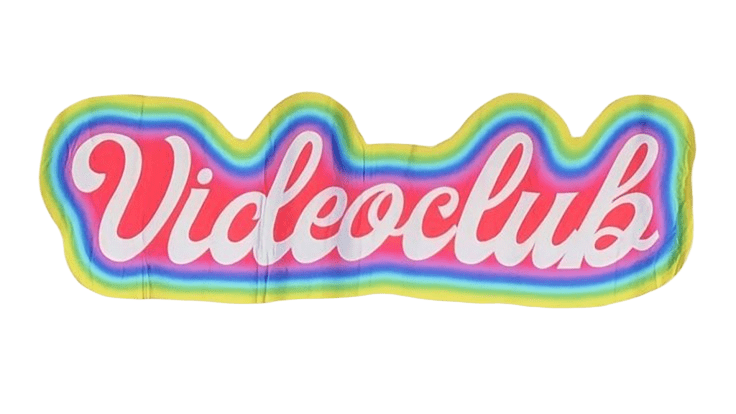
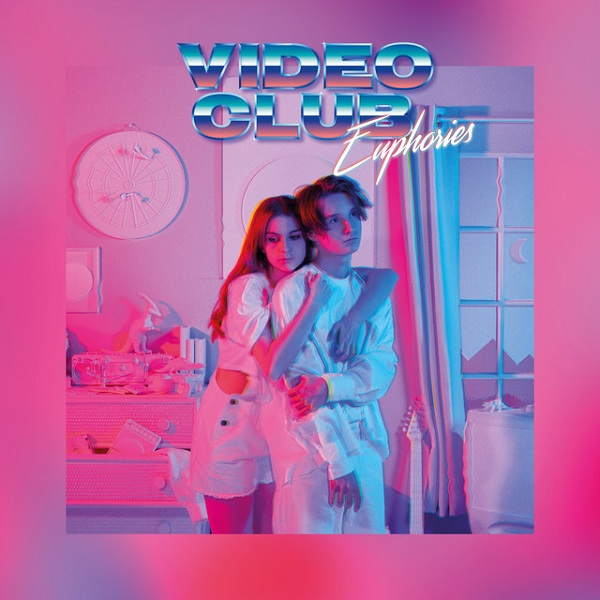

☆ VIDEOCLUB fue un exitoso dúo francés de electropop y synthpop formado en Nantes en 2018 por la actriz y youtuber Adèle Castillon y el músico Matthieu Reynaud. El proyecto destacó por fusionar la pureza del romance adolescente con una marcada estética retro inspirada en los años 80 y 90
☆ La banda nació a partir de la relación sentimental real entre ambos integrantes. Matthieu componía la música y Adèle aportó su voz y la plataforma de su canal de YouTube, sirviendo de impulso inicial para viralizar su propuesta.
☆ Se hicieron virales globalmente gracias a su sencillo debut "Amour Plastique" (2018), el cual acumuló cientos de millones de reproducciones y popularidad masiva en plataformas como TikTok y México.
☆ Su estilo músical es un sonido retro e influencias marcadas de la música pop de los años 80, combinando letras en francés con melodías bailables y nostálgicas. Lanzaron su único álbum como dúo titulado Euphories en febrero de 2021.
☆ El proyecto llegó a su fin en marzo de 2021 tras anunciar su separación amistosa y el fin de su relación sentimental. Tras esto, ambos continuaron su carrera musical como solistas.
